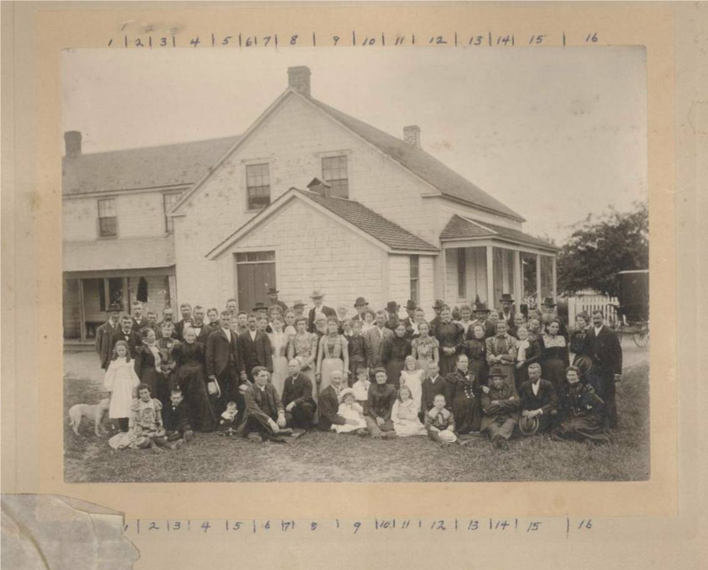

The Family Chronicle
No. 127 December 12, 2006
____________________________________________________________________

Photo (in front of Herb (later Edgar) Fowlie home in Little Branch) of the wedding of Laura Fowlie and Clem Dickson courtesy of Ernest MacLean
From left in vertical rows:
Row 1: 1- 2- 3- 4-
Row 2: 1- 2- 3- 4-Donald MacLean
Row 3:
Row 4: Addison Fowlie (Child)
Row 5: 1- 2- Herb Fowlie with hat 3- 4- 5- Hughie Cameron
Row 6: 1- 2- Clem Dickson
Row 7: 1- Mrs. Clem Dickson
Row 8: 1- 2- Mrs Herb Fowlie 3- Mrs Marjorie Fowlie 4- George Fowlie 5- Maj. Alex Cameron
Row 9: 1- 2- 3- Sterling Cameron 4- Annie Rogers 5- Mrs. Arch Cameron
Row 10: 1- 2- Arch (Hughie) Cameron
Row 11: 1- Marjorie Rice 2- Helen Rogers 3- Janie MacKnight
Row 12: 1- John Fowlie 2- Herb MacKnight 3- Jessie MacKibbon
Row 13: 1- Mrs. George (Teenie) Fowlie
Row 14: 1- Arch Cameron
Row 15:
According to my notes, the earliest Fowlies in Little Branch were George and Jane (MacKnight) Fowlie, both born in Scotland and emigrated to Bartibogue, New Brunswick in 1816 and moving to Little Branch in 1830; they erected a sawmill in 1833.
Descendants of George Smith Fowlie
1 George Smith FOWLIE b: September 15, 1793 in Aberdeenshire, Scotlandd: December 2, 1843 in New Brunswick
.. +Jane MACKNIGHT b: June 5, 1806 in Scotland d: October 14, 1898 in New Brunswick
...... 2 James FOWLIE b: July 16, 1830 d: January 11, 1923
.......... +Ann MACLEOD b: in Nova Scotia
...... 2 George FOWLIE b: 1831 in New Brunswick d: October 2, 1899
.......... +Jane Kerr MACKNIGHT b: 1843 in New Brunswick d: 1881
............... 3 [2] Christina FOWLIE b: 1867 in New Brunswick d: Deceased
................... +[1] George FOWLIE b: 1862 in New Brunswick
............... 3 Annie FOWLIE
................... +George RODGERS
............... 3 Isabella Jane Kerr FOWLIE b: 1862 in New Brunswick d: 1944 in New Hampshire
................... +William MACKNIGHT b: 1852 in New Brunswick d: 1895 in New Brunswick
............... 3 Elspeth FOWLIE
............... 3 Laura FOWLIE
............... 3 Francis Herbert FOWLIE d: July 18, 1934
................... +Roberta MACKNIGHT
...... 2 Robert Smith FOWLIE b: October 28, 1832 d: March 5, 1902
.......... +Mary Ann CAMERON b: May 15, 1835 d: October 26, 1886
............... 3 James A FOWLIE b: 1862
............... 3 Catherine Alice FOWLIE b: 1864 d: 1945
................... +Donald H MACLEAN b: 1862 d: 1920
............... 3 G Francis FOWLIE b: 1865
............... 3 Jane E FOWLIE b: 1868
............... 3 H Sinclair FOWLIE b: 1869
............... 3 William FOWLIE b: 1871
............... 3 Emily Anne FOWLIE b: 1873 d: 1940
................... +Robert James MACDONALD b: 1869
............... 3 Samuel NVK FOWLIE b: 1877
............... 3 Frederick Archibald FOWLIE b: May 6, 1866 d: June 8, 1963
................... +Minnie S. ROBERTSON d: 1912
............... *2nd Wife of Frederick Archibald FOWLIE:
................... +Bessie Laura Mae WATLING b: May 19, 1879 d: February 15, 1977
...... 2 Elizabeth Halliday FOWLIE b: June 5, 1834 d: March 10, 1911
...... 2 Samuel McKnight FOWLIE b: April 17, 1836 d: February 6, 1875
.......... +Alice WILLISTON b: 1842 d: March 30, 1864
............... 3 [1] George FOWLIE b: 1862 in New Brunswick
................... +[2] Christina FOWLIE b: 1867 in New Brunswick d: Deceased
...... *2nd Wife of Samuel McKnight FOWLIE:
.......... +Sarah WARD d: December 1869
...... 2 Alexander FOWLIE b: May 1838
...... 2 Isabella FOWLIE b: 1840 d: April 18, 1877
.......... +Duncan CAMERON b: 1827 in Black River, NB d: 1872
............... 3 Mary Jane CAMERON b: 1861 d: 1911
................... +Joseph Luther WILLISTON
............... 3 Catherine Caissie CAMERON b: 1865
................... +Frederick ZIMMERMAN
............... 3 Elizabeth Carrie CAMERON b: 1869
............... 3 John James CAMERON b: June 8, 1870 d: May 10, 1946
................... +Alice K KELLY b: May 26, 1887 d: August 29, 1923
...... *2nd Husband of Isabella FOWLIE:
.......... +T. George MACKAY
...... 2 Mary Ann FOWLIE b: June 28, 1841 d: June 14, 1937
.......... +Alexander CAMERON b: 1835
............... 3 Beatrice CAMERON b: 1863
............... 3 Archibald CAMERON b: 1865
............... 3 Samuel Francis CAMERON b: 1865
............... 3 George Duncan CAMERON b: 1872
............... 3 Catherine E CAMERON b: 1873
............... 3 Hugh Robert CAMERON b: 1875
............... 3 James A CAMERON b: 1878
...... 2 Francis FOWLIE b: November 20, 1843 d: June 18, 1912 in Minn, USA
.......... +Carrie GRIERSON b: in Minn, USA
The Family Chronicle (Copyright) is an occasional newsletter published by Don Glendenning and posted on the family website. It is intended to share information about my family, community and the times in which I grew up. While every effort is made to be accurate, errors are likely to occur. Comments, enquiries and information may be sent to 62 Queen Elizabeth Drive, Charlottetown, PEI, C1A 3A9. Tel: 902 892 5859. Email: dglende@auracom.com Web: www.glendenning.net/don